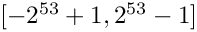

- Generated by
 1.16.1
1.16.1
|
Vestify
CLI stock analysis, scoring, and backtesting
|
The type used to store JSON numbers (unsigned).
RFC 8259 describes numbers as follows:
The representation of numbers is similar to that used in most programming languages. A number is represented in base 10 using decimal digits. It contains an integer component that may be prefixed with an optional minus sign, which may be followed by a fraction part and/or an exponent part. Leading zeros are not allowed. (...) Numeric values that cannot be represented in the grammar below (such as Infinity and NaN) are not permitted.
This description includes both integer and floating-point numbers. However, C++ allows more precise storage if it is known whether the number is a signed integer, an unsigned integer, or a floating-point number. Therefore, three different types, number_integer_t, number_unsigned_t and number_float_t are used.
To store unsigned integer numbers in C++, a type is defined by the template parameter NumberUnsignedType which chooses the type to use.
With the default values for NumberUnsignedType (std::uint64_t), the default value for number_unsigned_t is #!cpp std::uint64_t.
RFC 8259 specifies:
An implementation may set limits on the range and precision of numbers.
When the default type is used, the maximal integer number that can be stored is 18446744073709551615 (UINT64_MAX) and the minimal integer number that can be stored is 0. Integer numbers that are out of range will yield over/underflow when used in a constructor. During deserialization, too large or small integer numbers will automatically be stored as number_integer_t or number_float_t.
RFC 8259 further states:
Note that when such software is used, numbers that are integers and are in the range
are interoperable in the sense that implementations will agree exactly on their numeric values. 
As this range is a subrange (when considered in conjunction with the number_integer_t type) of the exactly supported range [0, UINT64_MAX], this class's integer type is interoperable.
Integer number values are stored directly inside a basic_json type.
??? example
The following code shows that `number_unsigned_t` is by default, a typedef to `#!cpp std::uint64_t`. ```cpp --8<-- "examples/number_unsigned_t.cpp" ``` Output: ```json --8<-- "examples/number_unsigned_t.output" ```